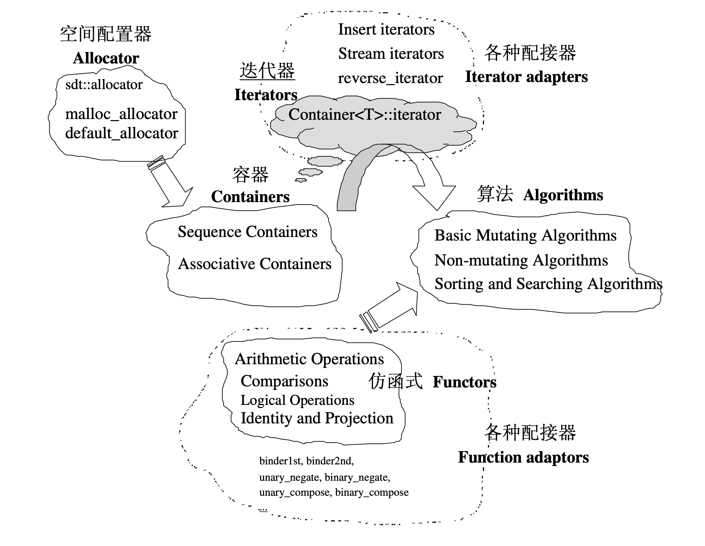

Ch01-C++ 之 STL
June 20, 2022
STL 是 1979 年诞生，1998 年加入 cpp 标准库。C11 出来之前 boost 库是常见的智能指针库，c11 有自己的智能指针。且有多个 STL 版本，如 SGI STL，GNU STL。

Container 通过 Allocator 取得数据储存空 间，Algorithm 通过 Iterator 存取 Container 内容。Functor 可以协助 Algorithm 完成不同的策略的计算，Adapter 可以修饰或套接 Functor。
| STL 组件 | 说明 |
|---|---|
| Container | 一种 class template，常用的包括 array、vector、forward_list、list、deque、set、map、multiset、multimap、unordered_set、unordered_map 等。 |
| Allocator | 一种 class template，实现了动态空间配置、空间管理、空间释放。 |
| Iterator | 一种 class template，将 operator*、operator->、operator++、operator-- 等相关操作进行了重载。 |
| Algorithm | 一种 function template，常用的有 sort、search、copy、erase 等。 |
| Functor | 重载了 operator()，使这个类具有了类似函数的行为。 |
| Adapter | 用来修饰容器 (container) 或仿函数 (functor) 或迭代器 (iterator) 接口的东西，如 queue 和 stack。 |